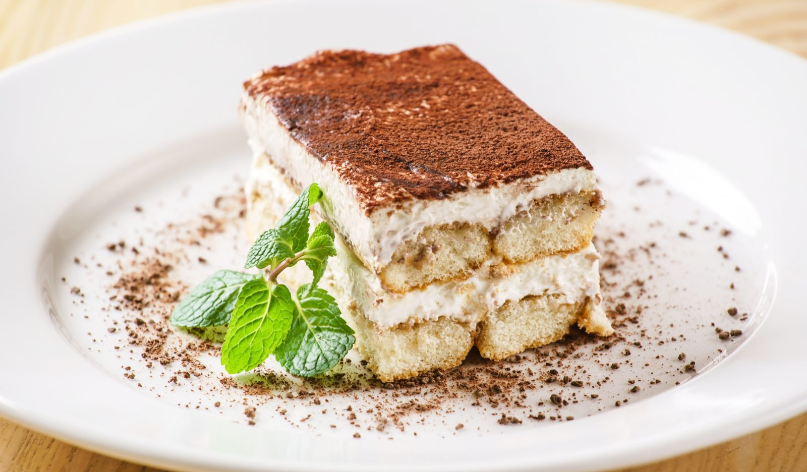
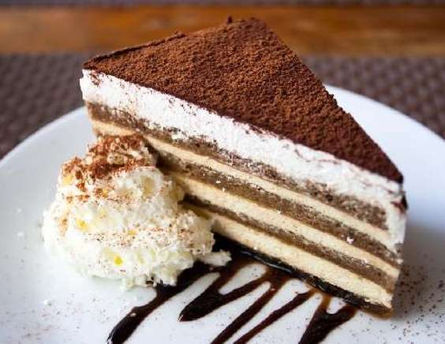

ТИРАМИСУ

Предлагаю вам сегодня приготовить Тирамису (Tiramisu) — очень воздушный, нежный итальянский десерт, с изумительным контрастом сладкого сливочного крема и горьковатого вкуса крепкого кофе. Однако, бесполезно объяснять каков Тирамису на вкус, его просто стоит попробовать. В рецепт классического Тирамису обязательно входят: сливочный сыр Маскарпоне (Mascarpone), куриные яйца, кофе эспрессо, сахар и бисквитное печенье Савоярди (Savoiardi), сверху десерт, как правило, посыпают какао-порошком.
Сейчас Тирамису очень популярен во всём мире, но родиной его является Италия. В переводе с итальянского Тирамису значит «Подними меня вверх» или «Вознеси меня» (tira — тяни, mi — меня, su — вверх). Это странное название трактуется по разному, например, что десерт настолько нежный и воздушный, что стоит лишь попробовать — оказываешься в облаках. Ещё существует версия, что это значит «подними мне настроение», но чаще всего название «Подними меня вверх» связывают с версией, что Тирамису обладает неким бодрящим, возбуждающим эффектом и что итальянские вельможи ели этот десерт перед любовными свиданиями.
Ингридиенты
-
яйца куриные 6 шт.
- сливочный сыр Маскарпоне 500 г
- сахар 150 г
- сахар 150 г
- кофе эспрессо 300 мл
- какао-порошок 1-2 ст. ложки
- коньяк (по желанию) 30-50 г
Ключ к успеху в приготовлении Тирамису — качественные ингредиеты, поэтому для начала давайте разберёмся с ними. Я думаю, самый главный вопрос, который может возникнуть — чем заменить сыр Маскарпоне? Ответ — ничем! Вы, конечно, можете использовать творожные сыры типа Филадельфии, но у вас тогда получится не Тирамису, а какой-то другой десерт с творожным кремом. Разница в том, что основным (и как правило единственным) ингредиентом Маскарпоне являются сливки и вкус у него сливочный, а не творожный. А последнее время, в связи с появлением на рынке огромного количества некачественной и фальсифицированной молочной продукции, стало также очень важным, найти маскарпоне действительно хорошего качества. Обращайте внимание, чтобы в составе не было никаких загустителей и стабилизаторов, жирность должна быть около 80 %. Очень часто также производители заменяют молочный жир растительным (к сожалению эта информация не всегда указана на упаковке), из такого маскарпоне у вас не получится хороший крем для тирамису, если сыр некачественный, то крем может получится жидкий. Так что на нём не стоит экономить, не берите слишком дешёвый маскарпоне непонятных производителей.
Приготовление
- Подготавливаем все ингредиенты. Варим крепкий эспрессо (300 мл) и оставляем его остужаться.
- Яйца (6 шт.) тщательно моем в тёплой воде с мылом. Аккуратно отделяем белки от желтков. Важно, чтобы ни капли желтка не попало в белок иначе белки не взобьются. Белки убираем пока в холодильник, они понадобятся нам позже.
- К желткам добавляем сахар (150 г).
- Взбиваем желтки с сахаром пока масса не побелеет, на это может уйти несколько минут. Возможно, у вас останется немного нерастворившегося сахара, если его не слишком много, то не переживайте, он растворится потом. Если сахара осталось много, взбивайте массу ещё.
- Выкладываем взбитые желтки с сахаром в большую ёмкость, добавляем туда же маскарпоне (500 г).
- Белки взбиваем с щепоткой соли до устойчивых пиков, на это может уйти примерно 3-7 минут, в зависимости от мощности миксера. Обязательно используйте для взбивания белков чистые ёмкость для взбивания и венчики, если хоть немного желтка или другого жира попадёт в белки, они могут не взбиться.
- Выкладываем взбитые белки в массу с желтками и маскарпоне. Теперь миксер использовать нельзя, нужно работать аккуратно, иначе крем может потерять воздушность. При помощи лопатки перемешиваем крем круговыми движениями снизу вверх, т.е. поднимаем крем со дна посуды наверх. Не нужно спешить, делайте всё очень аккуратно, нам нужно сохранить весть воздух, находящийся во взбитых белках.
- Остывший кофе наливаем в посуду с плоским дном, в которую помещается палочка Савоярди. Небольшой пластиковый контейнер очень хорошо здесь подойдёт. Если вы делаете Тирамису с коньяком, то добавляем коньяк (30-50 г) в кофе.
- Каждую палочку Савоярди погружаем в кофе и сразу вытаскиваем. Я держала примерно по 2 секунды, даже если вначале кажется, что печенье осталось сухое, потом оно пропитается полностью и станет мягкое. Если держать печенье в кофе дольше, то в результате в десерте оно получается довольно мокрое.
- Пропитанные кофе палочки выкладываем на дно формы. Здесь вы можете использовать большую форму, как у меня, а можете взять маленькие формочки или стаканы и делать в них десерты сразу на одну порцию.
- Сверху выкладываем оставшийся крем, выравниваем и убираем в холодильник на несколько часов, а лучше на ночь. Чем дольше вы держите Тирамису в холодильнике, тем лучше будет крем держать форму. Через несколько часов вы ещё не сможете достать из формы аккуратный кусочек десерта, сможете лишь есть его ложкой, хотя на вкусе это никак не отразится. Уже через 8-10 часов Тирамису будет гораздо лучше держать форму и вы уже сможете вырезать красивый кусочек. Мой Тирамису ждал в холодильнике больше 12 часов.
Перед подачей посыпьте десерт какао.
Можно заменить его на тёртый шоколад
И, вот наконец, наш Тирамису готов. Попробуйте, он великолепен! Приятного аппетита!

Оригинальный рецепт
Оригинальный рецепт